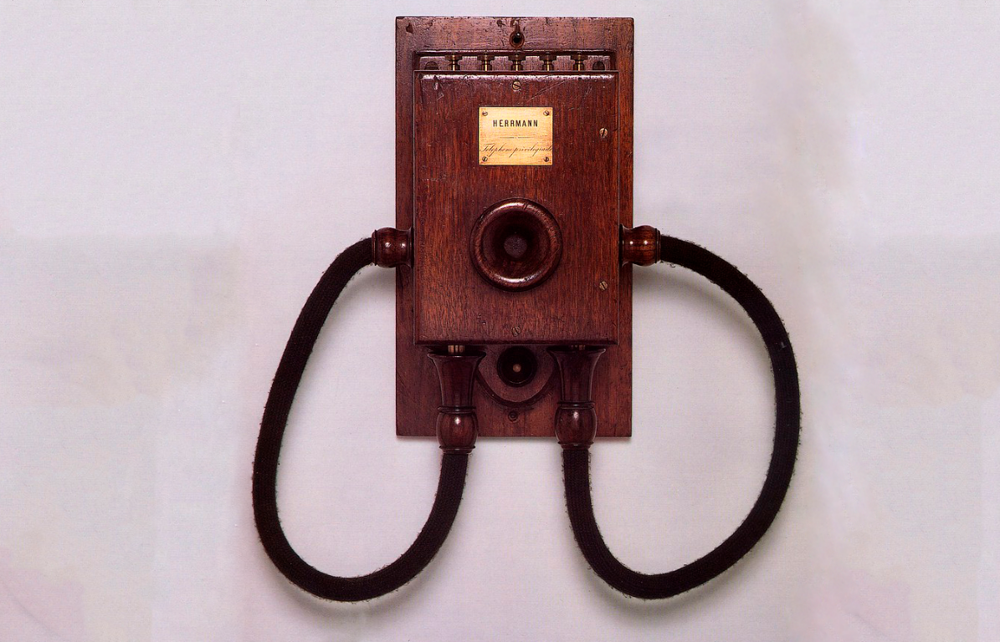

Trabalho sobre Portugal
1DSA
Culinária
Do que é composta?
- Regada a muito azeite, a culinária portuguesa é variada, sendo composta, principalmente, de peixes, frutos do mar, carne de caça, azeitonas, frutas e legumes diversos, seguindo a dieta mediterrânea.
- Além do bacalhau e do clássico pastel de Belém, a cozinha de Portugal tem muito mais a oferecer aos seus visitantes, como o pão e o vinho.
- Com novas descobertas territoriais, outros alimentos, como a batata e o feijão também foram incorporados aos pratos.
Influência na nossa culinária
Algumas das receitas com influência portuguesa são:
- Bacalhoada.
- Caldo verde.
- Quindim.
- Cachaça.
No entanto, alguns pratos, como a Feijoada, ganharam novas versões que incorporaram os ingredientes encontrados no Brasil.
Frutas como a manga, a fruta-do-conde e a jaca têm origem portuguesa, assim como a cebola, a alface, a couve e outras ervas que também foram trazidas para o nosso país e cultivadas em nossas terras.
Arroz de pato
O Arroz de Pato também está entre os mais famosos da culinária do país, conhecido também como Arroz de Braga, já que a comida foi criada nesta região.
O arroz é cozido em um caldo que, anteriormente, cozinhou o pato junto com presunto, chouriço e vários temperos.
Depois de ser cozida, a carne de pato é desfiada e misturada com o arroz e levada ao forno.
Bacalhau
O Bacalhau é, na maioria das vezes, o protagonista de pratos carregados de sabores únicos e tradições.
Entre os mais populares está o Gomes de Sá, feito com bacalhau cortado em pequenos pedaços amaciados com leite e cozidos com alho, cebola e azeite. Após ficar pronto, ele é servido com salsicha, ovos cozidos e azeitonas pretas.
Pastel de Nata
O Pastel de Nata é um verdadeiro clássico da culinária do país, conhecido em todo o mundo e uma verdadeira atração turística.
Criado no século XIX, nos mosteiros de Jerônimo, ele é feito com massa folhada caseira, crocante e bem fininha, e leva em sua receita açúcar, gemas de ovos e creme de leite.
Inclusive, esse prato tradicional está na lista das 7 Maravilhas da Culinária Portuguesa.
O mais famoso por lá é o Pastel de Belém, que é feito, justamente, na região que dá nome a este delicioso doce.
Ovo Mole
O Ovo Mole também é um clássico que todo turista deve experimentar na cidade de Aveiro, onde o prato teve origem nos conventos, no século XIX.
Ao percorrer as pastelarias e barraquinhas da cidade é fácil encontrar esse doce, feito com gema e coberto por uma espécie de suspiro.
O Ovo Mole é tão tradicional, que tem até uma estátua em sua homenagem.
Música
Fado
-
Estilo musical lírico e sentimental, com letras melancólicas que retratam o amor, surgido em Lisboa em 1830.
-
Existe o Fado de Lisboa, que é mais sentimental, e o Fado de Coimbra, que é mais acadêmico por refletir as tradições universitárias da região.
-
Uma das mais importantes cantoras de Fado é Amália Rodrigues (conhecida como a Rainha do Fado).
-
Em 2011, o Fado foi considerado um Patrimônio Imaterial da Humanidade pela UNESCO.
Cante Alentejano
-
É cantado em coro, por homens e mulheres, sem acompanhamento de instrumentos. É bastante característico de concelhos do distritos de Beja, na província de Baixo Alentejo, em Portugal.
-
Sua origem vem de contextos informais, como no campo ou em festas dos concelhos.
-
As letras falam de sentimentos e momentos do cotidiano. O primeiro grupo de Cante Alentejano surgiu no ano de 1926, associado aos trabalhadores de minas em Minas de São Domingos.
Hip-Hop Tuga
-
O Hip-Hop chegou em Portugal na década de 80, mas só se popularizou na década seguinte. Surgiu nos subúrbios de Lisboa (Maia, Amadora e Vila Nova de Gaia).
-
Veio tudo que tem relação com Hip-Hop americano: DJs, MCs, o "breakdance" e o grafite.
-
A principal plataforma de divulgação do estilo musical entre 1980 e 1990 foi a rádio. Sam The Kid foi um dos artistas do estilo musical mais marcante do estilo musical.
Festividades
Viagem Medieval em Terra de Santa Maria da Feira
No norte do país, em Santa Maria da Feira, a cidade fica com o cenário medieval da Europa. Os participantes se vestem com vestimentas medievais e se reúnem ao redor do castelo de Santa Maria da Feira. Começa do dia 3 até 14 de agosto, e inclui espetáculos, shows e várias atividades para a família.
Romaria de Nossa Senhora D'Agonia
Acontece em Viana do Castelo. Sua origem foi no século XIII, com a devoção à Nossa Senhora D'Agonia, na Capela de Bom Jesus (Capela de Nossa Senhora D'Agonia). Durante os quatros dias do mês de agosto, há o Cortejo Histórico-Etnográfico, Cortejo da Mordomia e outras atividades.
Festa de São João do Porto
É a maior celebração do norte de Portugal. No início, era uma festa pagã, celebrando o início das colheitas e do solstício. Depois, por causa da Igreja Católica, passou a celebrar o nascimento de São João Batista e, assim, concentrou a missa de procissão no dia 24 de Junho.
A noite de São João é comemorada na madrugada do dia 23 para o dia 24 de junho.
Na festividade, há a brincadeira do alho-poró ou do martelinho de brinquedo para bater nas cabeças das pessoas, a tradição de pular a fogueira em número ímpar, (para estar protegido o ano todo), e a de soltar balões à noite.
Tecnologia

Herrmann Wall Phone
- Criado por Maximiliano Augusto Herrman, em 1880.
- Foi considerado extremamente importante para a difusão do uso dos aparelhos telefônicos.
- Tal feito, possibilitou que as centrais Portuguesas abrissem linhas públicas para seus habitantes.
Pirelióforo
- Invenção atribuída a Manuel Antonio Gomes.
- Foi um grande sucesso no final do séc. XIX.
- De forma geral, tratava-se de uma imensa estrutura com centenas de espelhos que refletiam a luz para um único ponto, gerando uma imensa fonte de calor (forno solar), podendo derreter quase todos os tipos de materiais. Seu desfecho é curioso pois relatos apontam que após seu inventor recusar vender seu invento, ele sumiu misteriosamente.
Telefone pré-pago
Sim, isso mesmo que você está lendo (ou ouvindo). Se hoje, escutamos todo dia a frase “Chip da Ti...”, ou melhor, se possuímos internet na rua através de um plano pré-pago e de um pequeno chip dentro de nossos celulares, parte dos “créditos” dessa invenção se devem aos portugueses que tiveram essa ideia.
- O primeiro cartão desse modelo se chamava Mimo e foi uma criação da TMN (responsável pelas operações da Telecom Portuguesa), em setembro de 1995.
Grandes navegações
Saindo da área de curiosidades e entrando na História, temos a presença de um dos maiores países colonizadores da Idade Média e de todos os tempos. E consequentemente um dos mais ricos, permitindo o investimento na cultura e tecnologia. Graças a isso surgem inventos que tornariam Portugal cada vez mais forte, e mudaria o destino de diversos povos espalhados pelo mundo.
As principais criações possuem suas origens durante o período de desenvolvimento náutico mundial, sendo elas:
- Bússola
- Astrolábio
- Quadrante
- Caravelas
Grandes navegações
Por mais que essas criações não possuam interferência portuguesa, elas foram fundamentais para a criação de duas ferramentas extremamente poderosas para aquela época:
- Técnicas Marítimas: Conjunto de estratégias de navegação que permitiam a redução do tempo de viagem, sucesso em expedições e aceleração do domínio Portugues.
- Cartografia Ibérica: Cartografia náutica da região Ibérica e dos pontos para os quais navegaram (incluindo a África, América e Ásia). Equivalente ao Google Maps de hoje.
História
Brasil
O português foi introduzido ao Brasil por causa do “descobrimento” do Brasil durante o século XVI, com o primeiro contato entre os indígenas e os portugueses sendo através da navegação de Pedro Álvares Cabral.
Nos primeiros anos, as expedições eram limitadas ao litoral do Brasil, buscando extrair o pau-brasil. No entanto, por volta de 1530, começaram a efetuar medidas mais efetivas para a colonização do país, enviando Martin Afonso de Souza para uma expedição no Brasil. A partir dali, as capitanias foram criadas, eventualmente sendo centralizadas.
Angola
O primeiro contato entre Portugal e Angola foi por volta de 1483, através de navegações de Diogo Cão. Em 1575 foi começado o processo da colonização, liderada por Paulo Dias Novais que visava explorar os recursos naturais do país, como o petróleo.
O regime de capitanias hereditárias também foi implantado em Angola, assim como o sistema de colonização baseado no comércio de escravos, a maioria de quais era transportada para o Brasil. Apenas centenas de anos após a colonização conseguiram abolir o tráfico de escravos (1836) e ganhar a independência (1975).
Timor-Leste
Seu primeiro contato com os portugueses foi no século XVI, com a primeira referência à ilha sendo em uma carta de 1514 para o rei D. Manuel. Começaram a governar o país ao fim do século XVII e começo do século XVIII, sendo chamado de Timor Português.
Em 1975, o Timor-Leste ganhou a independência como resultado da Revolução dos Cravos em Portugal.
Linguística
O porquê da diferença
Por causa de vários imigrantes e nativos vivendo no Brasil, a língua portuguesa foi influenciada pelo sotaque e vocabulário de várias outras línguas e povos. Por exemplo, o sotaque caipira, falada no interior de São Paulo, teve como origem uma relação entre povos indígenas. O sotaque do Português Brasileiro também foi afetado por povos africanos que eram escravizados e levados para o Brasil, além dos imigrantes de outros países para o Brasil.
Fonética / Pronúncia
Diferente do Português Brasileiro, o Português de Portugal costuma enfatizar em sua fala as vogais tônicas, enquanto as átonas são mais fracas e podem acabar sendo puladas na pronúncia.
menino -> m’nino
esperança -> esp’rança.
A letra L no final das palavras também é enfatizado no português de Portugal, assim como o R vibrante é visto com maior frequência.
Sintaxe
No português de Portugal, o gerúndio é usado de forma infinitiva com uma preposição, diferente do português brasileiro.
- Estou preparando o almoço. -> Estou a preparar o almoço.
- Estou escrevendo uma poesia. -> Estou a escrever uma poesia.
- Estou falando com meu amigo. -> Estou a falar com meu amigo.
- Estou comendo um pastel. -> Estou a comer um pastel.
- Estou brincando com as crianças. -> Estou a brincar com as crianças.
Sintaxe
Pronomes no português de Portugal costumam ser ditos após o verbo, diferentemente do Brasil, onde são usados no início da frase.
- Me faz um favor? -> Faz-me um favor?
- Me dá um presente? -> Dá-me um presente?
Além disso, o pronome “tu” e o “vós” é muito mais comum em Portugal durante conversas informais.
Vocabulário
Como qualquer dialeto, o português de Portugal também tem suas próprias palavras e gírias que não costumam ser faladas no Brasil, ou possuem um significado diferente.
- Apostila -> Sebenta.
- Celular -> Telemóvel.
- Ônibus -> Autocarro.
- Trem -> Comboio.
- Sorvete -> Gelado.
- Café da Manhã -> Pequeno Almoço.
- Legal -> Fixe/Giro.
- Muito -> Bué.
Turismo
Torre de Belém
-
Foi construída em 1520 pelo arquiteto e escultor Francisco de Arruda.
-
É um monumento super tradicional e histórico em Lisboa, ela é uma fortificação que se destaca pela sua arquitetura.
-
Ela é oficialmente chamada de Torre de São Vicente.
-
Por dentro, a torre é composta por cinco andares, eles contam com: sala do governador, sala do reis, sala das audiências, capela e o terraço da torre, de onde se tem uma bela vista de Lisboa.
Santuário de Fátima
- Considerado um dos mais visitados destinos religiosos do mundo, o Santuário de Fátima recebe turistas de diversas nacionalidades durante todo o ano.
- Inicialmente, em 1917, o monumento havia sido construído apenas como uma simples capela.
- Contudo, após a mística aparição de Nossa Senhora, a construção tomou proporções maiores e uma arquitetura mais elaborada. Por esses motivos, não só os turistas mais religiosos visitam o local, como também pessoas que desejam apreciar a construção.
Mosteiro dos Jerónimos
- Localizado em Lisboa, o Mosteiro dos Jerónimos é tão antigo quanto nosso país, com suas obras iniciando em 1501.
- Foi construído de acordo com o desejo do rei D. Manuel I de eternizar o seu governo, perpetuando as glórias alcançadas durante a Era das Descobertas.
- O nome oficial é Real Mosteiro de Santa Maria de Belém.


{kind=link}
{kind=link}
{kind=link}
{kind=link}
{kind=link}
{kind=link}
{kind=link}
{kind=link}
{kind=link}
{kind=link}
{kind=link}
{kind=link}
{kind=link}
{kind=link}
{kind=link}
{kind=link}
{kind=link}
{kind=link}
{kind=link}
{kind=link}
{kind=link}
{kind=link}
{kind=link}
{kind=link}
{kind=link}
{kind=link}
{kind=link}
{kind=link}
{kind=link}
{kind=link}
{kind=link}
{kind=link}
{kind=link}
{kind=link}
{kind=link}